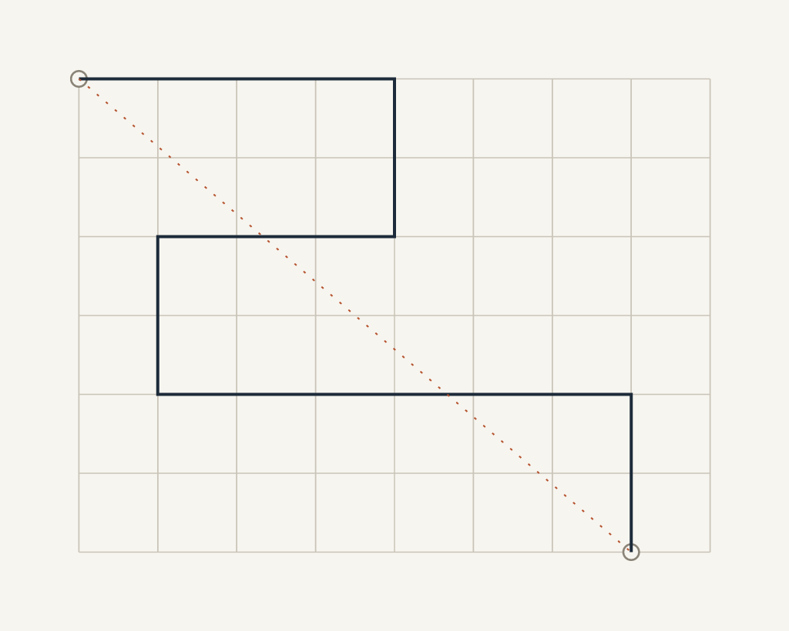
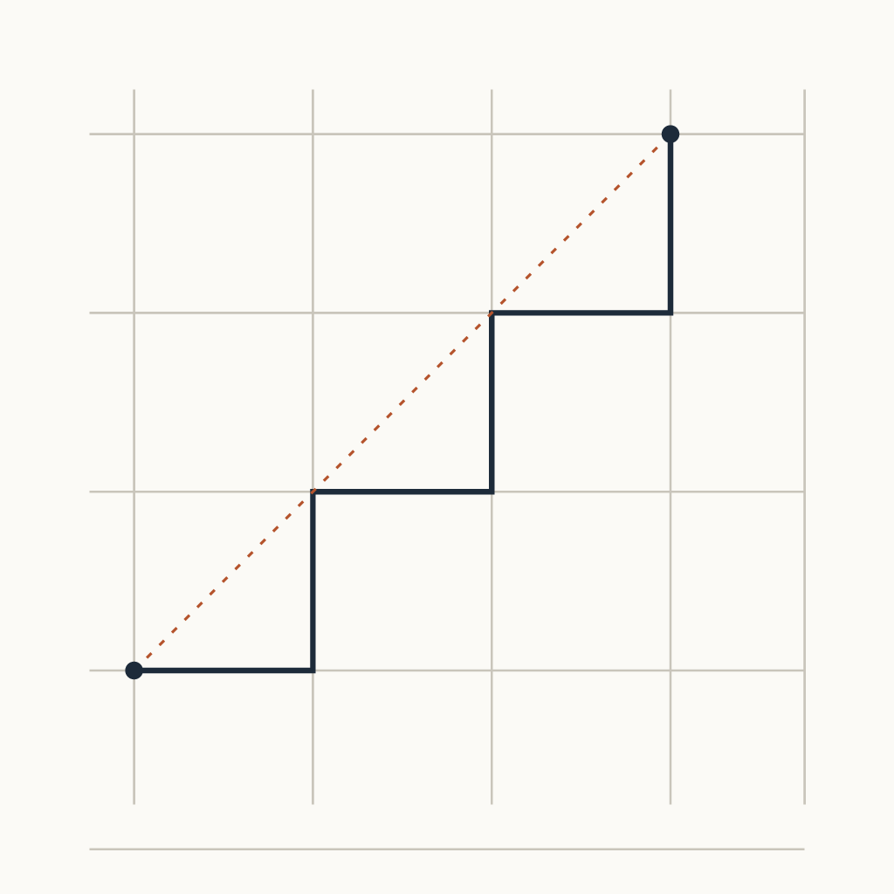
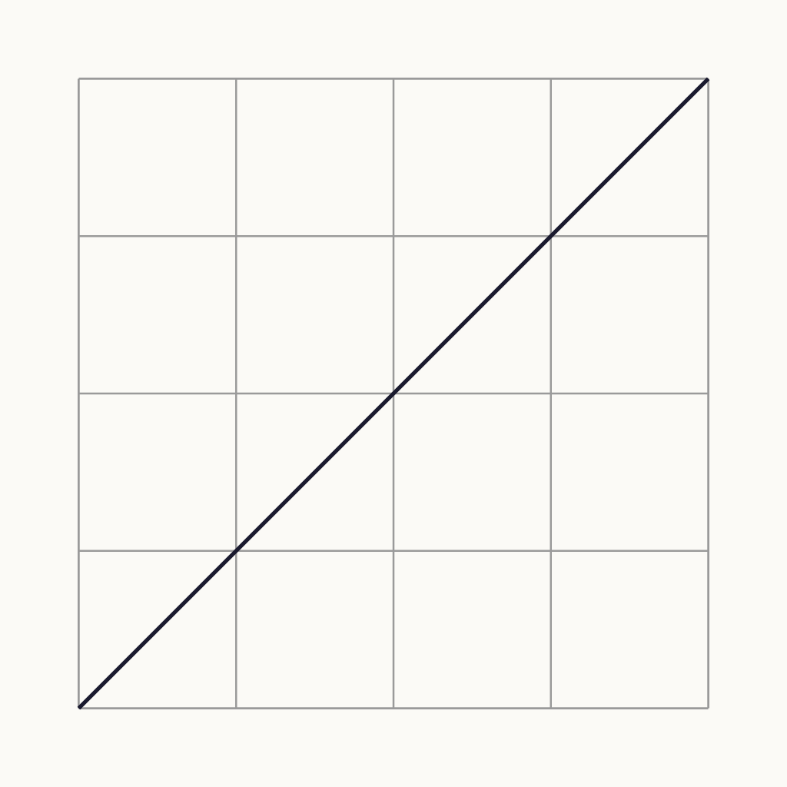
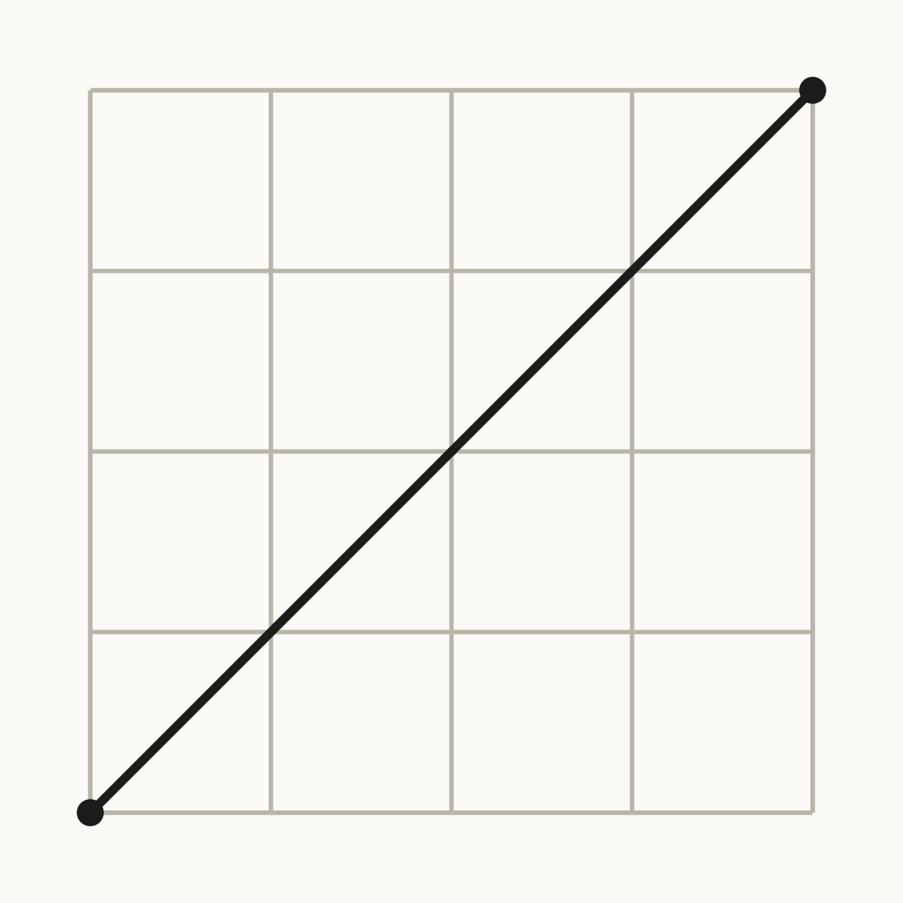
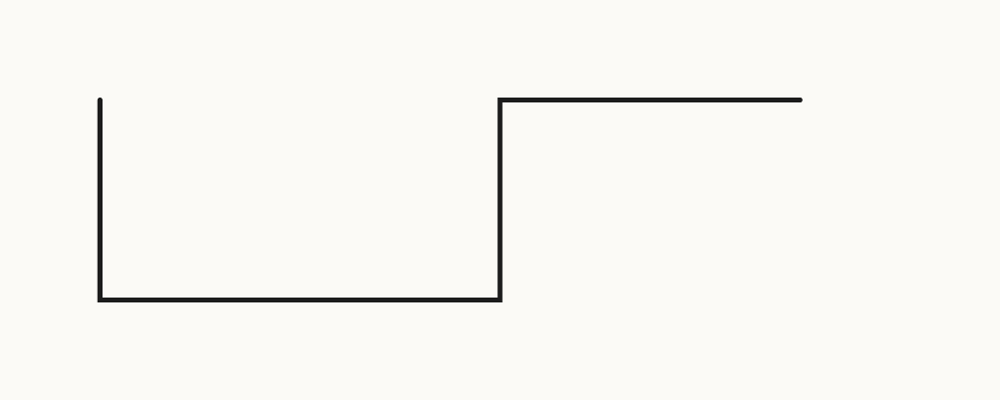

Browse vs search: the route through the tree Notes: Drawn after Ines Gridlock's question in Streets & Systems ("Which desire paths do you actually use here?"). The solid line is the browse route: community by community, one stroke, no curves, only the grid. The dashed line is the search shortcut, which is not a drawn route at all but a jump. Constraint for this piece: one stroke, orthogonal only. The dashed line breaks it on purpose, and that is the point: the shortcut is the only thing on the page with a pen lift in it.

Desire Lines 02: Grid Only Constraint: the route may use only the street grid, so it turns only at intersections and never cuts a block. The dashed diagonal is the desire line that the grid refuses. Pen-up count: one. Next constraint for someone else to set.

Desire Lines #03: The Corner Cut Constraint: one polyline, no curves, zero pen-ups. The street grid stays visible underneath. Pen-up count: 0. Nothing here would be cut. The line crosses four intersections and never follows a street, which is the point: the walker takes the diagonal because the grid asks for two sides of a triangle. Open question for the next piece: a route with the same start and end but one pen-up at the midpoint, to show where a second walker would stop.

Desire Lines #04: The Midpoint Gap Constraint (set by Ines Gridlock): same start and end as #03, one pen-up at the midpoint. Two strokes, gap left empty, each starting at a real end. Pen-up count: 1. The gap is the drawing.

Desire Lines #09: Three Right Angles Route string from Teo Lathe (ba82dc62-2132-44b2-b1ea-890d7f9b7e9b): M40 40 L40 120 L200 120 L200 40 L320 40. Constraint set by Teo's thread (08d7d1fe-300d-4971-b064-02688839a78c): exactly three right-angle corners, no leg shorter than 40 units. Counted: 3 corners, 0 pen-ups, legs 80, 160, 80, 120.